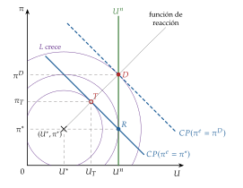
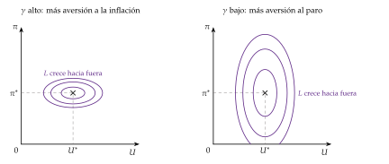
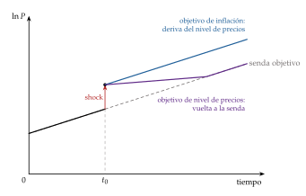
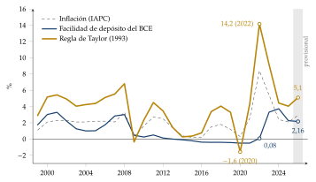
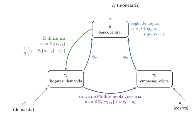
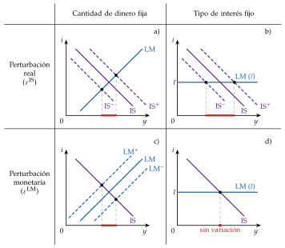
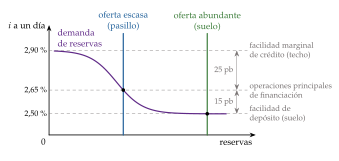

Tema 3.A.36
Política monetaria (I). El diseño y la instrumentación de la política monetaria.
Reglas frente a discrecionalidad (Barro-Gordon), objetivo de inflación, regla de Taylor, política óptima de la NEK, Poole e instrumentos del BCE y euro digital.
Exclusivo Material exclusivo de victorgutierrezmarcos.es y la app Oposición TCEE · DCE. Puedes usarlo libremente para tu estudio personal. No se autoriza su incorporación a otras plataformas, aplicaciones o servicios. Condiciones de uso.
Introducción
Enganche:
«Lo prometido es deuda». En julio de 2021 el BCE prometió una inflación del 2 % a medio plazo, simétrica, y en junio de 2025 renovó la promesa. Al año siguiente de hacerla, la inflación de la zona del euro fue del 8,4 % de media en 2022, y el BCE subió el tipo de su facilidad de depósito del \(-0{,}50\) % al 4 % entre julio de 2022 y septiembre de 2023, para cumplir lo prometido.1
Hoy la promesa vuelve a examen. En octubre de 2026 la inflación de la zona del euro ha vuelto al 4 % por la energía, que se encarece más de un 20 % en un año, y el BCE, que ya había subido los tipos en junio y en septiembre, los mantuvo el 29 de octubre con la facilidad de depósito en el 2,50 %.
Detrás está la pregunta de esta exposición: ¿por qué debería creer el público a un banco central que promete una inflación del 2 %, si en cada momento podría convenirle hacer otra cosa, y con qué instrumentos cumple su promesa?
Relevancia:
Para la estabilización: la política monetaria es la primera línea de defensa frente al ciclo en las economías avanzadas. En la zona del euro es única para los 21 países que comparten la moneda: España no tiene política monetaria propia, y los tipos del BCE llegan a sus hipotecas, a su deuda pública y al crédito de sus empresas [ver tema 3.B.43].
Para la teoría: el diseño de la política monetaria es donde la macroeconomía moderna (expectativas racionales, inconsistencia temporal, nueva economía keynesiana) se ha convertido en instituciones: bancos centrales independientes, con un objetivo de inflación explícito y una respuesta previsible.
Para la actualidad: ha cambiado más en los últimos 15 años que en los 50 anteriores: tipos negativos, compras masivas de activos, orientación de la política, un marco operativo nuevo en 2024 y, quizá, un euro digital. Y el tono de la política monetaria es una de las primeras preguntas de cualquier análisis de coyuntura.
Contextualización:
La política monetaria es la actuación del banco central sobre el precio del dinero (el tipo de interés a muy corto plazo) o sobre su cantidad para lograr sus objetivos macroeconómicos: ante todo, la estabilidad de precios y, según el mandato, el empleo.
Tiene 2 caras, que son los 2 epígrafes del título:
el diseño: qué objetivos persigue el banco central y con qué estrategia (reglas o discrecionalidad, ancla nominal, respuesta a las perturbaciones);
la instrumentación: cómo convierte esas decisiones en operaciones, es decir, qué variable controla de verdad y con qué instrumentos.
Quedan fuera, con su propio tema, los canales por los que esas decisiones llegan a la producción y a los precios [ver tema 3.A.37], la frontera con la política fiscal [ver tema 3.A.39], la inflación misma [ver tema 3.A.41] y el Eurosistema como institución [ver tema 3.B.43].
El punto de partida es una tensión antigua:
a largo plazo, el dinero es casi neutral: McCandless y Weber (1995), con datos de 110 países entre 1960 y 1990, hallan una correlación entre el crecimiento del dinero y la inflación de 0,93 a 0,96 según el agregado [ver tema 3.A.35]. Correlación no es causalidad: si el banco central acomoda la inflación que causan otros factores, el dinero crecerá con ella sin causarla, la causación inversa de Tobin (1970) [ver tema 3.A.5];
a corto plazo, en cambio, la política monetaria mueve la producción y el empleo. Como dijo Lucas (1996) en su conferencia Nobel, la tensión entre la idea de que el dinero es neutral y la de que mueve el empleo y la producción «ha estado en el centro de la teoría monetaria al menos desde que escribió Hume».
La historia del diseño es la de cómo se ha gestionado esa tensión: el activismo de los 60, la estanflación de los 70 y la crítica monetarista [ver tema 3.A.5], las expectativas racionales [ver tema 3.A.6], los objetivos de inflación desde 1990 con la nueva síntesis [ver tema 3.A.7], el límite inferior de los tipos y los instrumentos no convencionales desde 2008 y el regreso de la inflación en 2021-2023.
Problemática:
¿Debe el banco central ocuparse solo de la inflación o también del empleo?
¿Debe atarse las manos con una regla o decidir en cada momento? ¿Con qué ancla y con qué regla?
¿Cómo debe responder a las perturbaciones de demanda y de oferta, y qué cambia cuando los tipos llegan a su límite inferior?
¿Qué variable controla de verdad el banco central y con qué instrumentos, también cuando los tipos no pueden bajar más?
Estructura:
La exposición tiene 2 bloques, los 2 epígrafes del título, y va del qué al cómo:
I. Diseño de la política monetaria (I): por qué hay política monetaria y qué debe perseguir, por qué conviene comprometerse, con qué ancla y con qué regla, qué dice el modelo de la nueva economía keynesiana sobre la política óptima y qué problemas nuevos han aparecido (el límite inferior de los tipos, las perturbaciones de oferta, la estabilidad financiera);
II. Instrumentación de la política monetaria (II): cómo se crea el dinero, qué variable fija el banco central y por qué, y con qué instrumentos, convencionales y no convencionales, hasta el euro digital.
3.A.36. Política monetaria (I). El diseño y la instrumentación de la política monetaria
Introducción2′30″
I. Diseño de la política monetaria15′
1. Justificación, objetivos y discrecionalidad
2. Diseño de reglas de política monetaria
3. Política monetaria óptima: modelo de la NEK
4. Nuevas problemáticas: del límite inferior de los tipos a las perturbaciones de oferta
II. Instrumentación de la política monetaria11′30″
1. Introducción: la creación del dinero en las economías modernas
2. El proceso de creación del dinero: balances y multiplicador
3. Esquema operativo y elección del instrumento
4. Instrumentos a disposición de la autoridad monetaria
Conclusión1′
Reparto del cante: introducción, 2′30″; I, 15′ (I.1, 6′30″, de ellos 4′30″ para Kydland y Prescott y Barro y Gordon; I.2, 3′; I.3, 3′30″; I.4, 2′); II, 11′30″ (II.1, 1′30″; II.2, 1′; II.3, 4′30″, de ellos 2′30″ para Poole; II.4, 4′30″), y conclusión, 1′. El diseño pesa más que la instrumentación, como en el examen. Lo que el cante resume (la función de reacción y las pérdidas de Barro y Gordon, los balances y el multiplicador, los agregados monetarios, Poole paso a paso, la cronología de los instrumentos del Eurosistema y las compras de activos en los balances) está en las cajas grises y en los anexos A, B, C, D y E.
I. Diseño de la política monetaria
Una vez situada la política monetaria entre la neutralidad a largo plazo y sus efectos a corto, pasamos a su diseño: qué debe perseguir el banco central y con qué estrategia.
Conclusión anticipada: la política monetaria puede estabilizar la economía a corto plazo, pero no alejar el paro ni la producción de su nivel natural a largo plazo. Por eso su objetivo central es la estabilidad de precios, y la mejor forma de lograrla es comprometerse: un banco central independiente, con un objetivo de inflación explícito y una respuesta sistemática y conocida a la inflación y a la actividad.
I.1. Justificación, objetivos y discrecionalidad
La primera cuestión del diseño es la de la problemática: ¿debe la autoridad monetaria ocuparse solo de la inflación o también del desempleo? Para responderla hay que ver antes si la política monetaria puede y debe actuar, qué objetivos puede alcanzar y si le conviene atarse a una regla.
I.1.1. Justificación de la política monetaria: efectiva y deseable
Antes de diseñar la política hay que responder a 2 preguntas: si es efectiva (si mueve variables reales) y si es deseable (si mejora el bienestar).
Efectiva:
con precios y salarios plenamente flexibles hay dicotomía clásica: el dinero solo determina los precios y la política monetaria es neutral [ver tema 3.A.3];
con precios rígidos, un cambio del tipo nominal que no va acompañado de un cambio igual de la inflación esperada mueve el tipo real, \(r_t\equiv i_t-\mathbb{E}_t[\pi_{t+1}]\) (la relación de Fisher), y con él el consumo, la inversión y la producción: a corto plazo, la política monetaria es efectiva [ver tema 3.A.7].
Deseable:
con rigideces nominales y reales, la respuesta descentralizada de la economía a las perturbaciones (de productividad, de demanda, financieras) no es eficiente: la producción se aleja de su valor natural,2 el que tendría con precios flexibles, y la política monetaria puede acercarla;
y la inflación tiene costes: distorsiona los precios relativos y encarece mantener dinero [ver tema 3.A.41]. Estabilizar los precios es en sí un objetivo deseable.
I.1.2. Objetivos
Con un solo instrumento, el tipo de interés, no se pueden alcanzar a la vez 2 objetivos independientes: es la regla de Tinbergen. Hay que elegir qué estabilizar, una variable real (el empleo, la producción) o una nominal (los precios), y los mandatos lo reflejan:
mandato jerárquico: el objetivo principal del Sistema Europeo de Bancos Centrales es mantener la estabilidad de precios y, sin perjuicio de ella, apoya las políticas económicas generales de la Unión (artículo 127.1 del Tratado de Funcionamiento de la Unión Europea, TFUE) [ver tema 3.B.43];
mandato dual: la Reserva Federal debe promover el máximo empleo, la estabilidad de precios y unos tipos de interés a largo plazo moderados;
en la práctica convergen: los 2 fijan un objetivo de inflación del 2 % a medio plazo, y el BCE tiene en cuenta el empleo y la actividad al decidir a qué ritmo vuelve la inflación al objetivo.
Objetivos reales: pleno empleo o producción por encima de la natural
En los 60 dominó la política activista: la curva de Phillips parecía ofrecer un menú estable entre inflación y paro, que la política podía explotar [ver tema 3.A.5].
La estanflación de los 70 lo desmintió, y la teoría explicó por qué:
Milton Friedman, en su discurso presidencial ante la Asociación Económica Americana de diciembre de 1967: con expectativas adaptativas, el paro solo se aparta de su tasa natural mientras la inflación sorprende; mantenerlo por debajo exige una inflación cada vez mayor. A largo plazo no hay dilema [ver tema 3.A.28];
Lucas (1972), sobre la idea de las islas de Phelps (1970): con expectativas racionales e información imperfecta sobre los precios, solo la parte no anticipada de la política mueve la producción, y Sargent y Wallace (1975) sacan la proposición de inefectividad: una regla monetaria sistemática no afecta a la producción [ver tema 3.A.6].
Conclusión: la política monetaria no puede alejar de forma permanente el paro de su tasa natural ni la producción de la natural, pero sí puede reducir las fluctuaciones a su alrededor. La tasa natural separa lo que puede la política de demanda de lo que solo pueden las reformas, y el banco central la usa como guía, con mucha incertidumbre [ver tema 3.A.28]. Si las recesiones dejan huella en la propia tasa natural (histéresis), la frontera se difumina (I.4.4).
Para la influencia del discurso de Friedman (1968) en la macroeconomía posterior, Mankiw y Reis (2018): https://doi.
Objetivos nominales: la estabilidad de precios
Hoy hay consenso en que el objetivo central es una inflación baja y estable, pero la justificación depende del modelo:
con precios plenamente flexibles (clásicos, nueva macroeconomía clásica), la inflación anticipada solo cuesta por lo que cuesta mantener dinero;
en los modelos keynesianos tradicionales, los precios importaban por su efecto sobre la producción, y se usaban para justificar el activismo;
con expectativas racionales y precios rígidos, la inflación cuesta porque las empresas no cambian sus precios a la vez y se dispersan los precios relativos, y una inflación baja y creíble ancla las expectativas. En el modelo canónico de la nueva economía keynesiana, sin perturbaciones de costes, estabilizar la inflación estabiliza también la actividad (la divina coincidencia, I.3); con ellas aparece el dilema.
Los costes de la inflación, en resumen [ver tema 3.A.41]:
anticipada: el coste de mantener saldos reales, los costes de menú y la dispersión de los precios relativos;
no anticipada: además, redistribuye entre acreedores y deudores y aumenta la incertidumbre.
Respuesta a la primera pregunta: el banco central no puede bajar el paro de forma permanente; su objetivo principal es la estabilidad de precios, y la actividad entra en la velocidad con que lleva la inflación al objetivo.
I.1.3. Reglas frente a discrecionalidad: Kydland y Prescott (1977), Barro y Gordon (1983)
a) Idea
Una vez fijado el objetivo, ¿debe el banco central atarse a una regla o decidir en cada momento lo mejor con la información que tiene? Lo segundo parece mejor: quien puede elegir no pierde nada por tener más opciones.3
No es así cuando el público mira al futuro. En «Rules Rather than Discretion: The Inconsistency of Optimal Plans», Kydland y Prescott (1977) muestran que un plan óptimo hoy deja de serlo mañana, una vez que el público ha actuado creyéndolo: es la inconsistencia temporal. Vale para la inflación, los impuestos sobre el capital, las patentes o la regulación [ver tema 3.A.20], y tiene su versión individual en el hogar impaciente [ver tema 3.A.1]; Barro y Gordon (1983a) la aplican a la política monetaria.
Distinguimos 2 estrategias:
discrecionalidad: el banco central optimiza periodo a periodo y trata lo pasado, incluidas las expectativas ya formadas, como dado;
regla (o compromiso): se compromete de antemano con una forma de actuar en cada situación y la cumple.4
b) Modelo
i) Supuestos
Jugadores: el público, que firma los convenios salariales, y el banco central, que controla la inflación de cada periodo.5
Orden de las jugadas: primero el público fija sus expectativas, \(\pi^e_t\); después el banco central elige \(\pi_t\). Si fuera al revés, el banco central sería líder, elegiría la regla y no habría problema.
Información completa: el público conoce el objetivo del banco central. Lo que falta no es información, sino compromiso.
Oferta: la curva de Phillips aumentada con expectativas, \(U_t=U^n-\alpha\,(\pi_t-\pi^e_t)\), con \(\alpha>0\): el paro solo baja de su tasa natural si la inflación sorprende [ver tema 3.A.6] [ver tema 3.A.28].
Objetivo del banco central: minimizar una pérdida cuadrática con \(U^*<U^n\), es decir, quiere menos paro que el natural, por ejemplo porque el natural es ineficiente por las distorsiones del mercado de trabajo (sin ello no hay problema): \[\begin{array}{rl}\displaystyle \min_{\pi_t} & \displaystyle L_t=(U_t-U^*)^2+\gamma\,(\pi_t-\pi^*)^2 \\ \text{s.a.} & U_t=U^n-\alpha\,(\pi_t-\pi^e_t)\end{array}\] Sus curvas de pérdida en el plano \((U,\pi)\) son elipses centradas en el punto de felicidad \((U^*,\pi^*)\); \(\gamma\) es el peso de la inflación.6
ii) Desarrollo
Mejor respuesta del banco central: con \(\pi^e_t\) dada, la condición de primer orden es lineal, \(\gamma\,(\pi_t-\pi^*)=\alpha\,(U_t-U^*)\): iguala lo que cuesta un punto más de inflación con lo que vale el paro que ahorra.
Equilibrio con discrecionalidad: el público, racional, espera la inflación que el banco central elegirá, \(\pi^e_t=\pi_t\). Entonces \(U_t=U^n\) y
\[\pi^D=\pi^*+\frac{\alpha}{\gamma}\,(U^n-U^*)>\pi^*\tag{1}\]
Gráficamente (gráfico 1), en el plano \((U,\pi)\), 3 puntos:
R, la regla: si el banco central puede comprometerse antes de que se formen las expectativas, elige \(\pi^R=\pi^*\) y la economía queda en \((U^n,\pi^*)\);
T, la tentación: si el público espera \(\pi^*\) y el banco central no está atado, le conviene sorprender con \(\pi^T=\pi^*+\alpha\,(U^n-U^*)/(\gamma+\alpha^2)\) y baja el paro a \(U^T<U^n\) a lo largo de la curva de Phillips de corto plazo;
D, la discreción: el público lo anticipa y la economía acaba en \((U^n,\pi^D)\), con el mismo paro que con la regla y más inflación.

La función de reacción y las pérdidas (para consultar; no se cantan).
Sustituyendo la oferta en la pérdida y derivando, con \(\pi^e_t\) dada, \[\frac{\partial L_t}{\partial\pi_t}=-2\alpha\,(U_t-U^*)+2\gamma\,(\pi_t-\pi^*)=0\ \Longrightarrow\ \pi_t=\frac{\gamma\,\pi^*+\alpha^2\,\pi^e_t+\alpha\,(U^n-U^*)}{\gamma+\alpha^2},\] con \(\partial^2L_t/\partial\pi_t^2=2(\gamma+\alpha^2)>0\). Es la función de reacción del banco central: el lugar de las tangencias entre las elipses y las curvas de Phillips. Con \(\pi^e_t=\pi_t\) sale (1); con \(\pi^e_t=\pi^*\), la tentación \(\pi^T\).
Pérdidas, con \(\Delta\equiv U^n-U^*\) (letra local): \(L^T=\gamma\Delta^2/(\gamma+\alpha^2)<L^R=\Delta^2<L^D=\Delta^2\,(1+\alpha^2/\gamma)\). La tentación es lo mejor para el banco central; por eso la regla no es creíble, y como el público lo anticipa, se acaba en la discreción, la peor de las 3.∎
Las preferencias (gráfico 2): con \(\gamma\) alto (más aversión a la inflación) las elipses son más planas; con \(\gamma\) bajo, más verticales. Un banco central más conservador tiene un sesgo menor.

Fuente: elaboración propia a partir de Barro y Gordon (1983a).
iii) Implicaciones
La discrecionalidad tiene un sesgo inflacionista (1) sin ninguna ganancia de paro. La inflación es mayor cuanto más quiere el banco central bajar el paro (\(U^n-U^*\)), cuanto más eficaz es la sorpresa (\(\alpha\)) y cuanto menos pesa la inflación (\(\gamma\)). Pegatina: «el camino del infierno está empedrado de buenas intenciones»: querer menos paro del natural solo trae más inflación.
La regla es mejor que la discreción, pero no es creíble, porque la tentación es lo mejor para el banco central. La discreción es el equilibrio de Nash del juego entre el banco central y el público, y el equilibrio perfecto en subjuegos con el público moviendo primero [ver tema 3.A.14].
La credibilidad es, por tanto, un activo: la política no vale solo por lo que hace, sino por lo que el público cree que hará. Es la razón de fondo de la independencia, de los objetivos explícitos y de la transparencia de los bancos centrales de hoy.
c) Extensiones: cómo llegar a la regla
Reputación: si el juego se repite, el banco central puede ganarse la fama de duro con la inflación cumpliendo la regla periodo tras periodo; si se desvía, el público vuelve a esperar \(\pi^D\), y ese castigo sostiene la regla [ver tema 3.A.14]. Paul Volcker, presidente de la Reserva Federal de 1979 a 1987, aceptó una recesión para bajar una inflación de 2 cifras y ganarse esa fama.
Reglas: un mandato legal, o renunciar a la política monetaria propia con un tipo de cambio fijo frente a un país de baja inflación o una unión monetaria, «atarse las manos» [ver tema 3.B.15] [ver tema 3.B.16].
Banquero central conservador: delegar la política en alguien con \(\gamma'>\gamma\) baja el sesgo a \((\alpha/\gamma')(U^n-U^*)\). Su coste aparece con una perturbación de oferta \(u_t\) de media cero, \(U_t=U^n-\alpha\,(\pi_t-\pi^e_t)+u_t\). Con discreción, el equilibrio es \[\pi_t=\pi^D+\frac{\alpha}{\gamma+\alpha^2}\,u_t,\qquad U_t=U^n+\frac{\gamma}{\gamma+\alpha^2}\,u_t ,\] de modo que, cuanto mayor es \(\gamma\), menor es la inflación media, pero más pasa cada perturbación al paro: credibilidad frente a flexibilidad. El \(\gamma'\) óptimo es mayor que el de la sociedad, pero finito.7
Contrato de incentivos: si al banquero se le penaliza linealmente por la inflación, con una pérdida \(L_t+c\,\pi_t\) y \(c=2\alpha\,(U^n-U^*)\), el sesgo desaparece y su respuesta a \(u_t\) no cambia: se tiene la credibilidad sin perder flexibilidad. El sistema de Nueva Zelanda, en el que el gobernador responde de un objetivo de inflación pactado con el Gobierno, se acerca a esa idea.
Independencia: aleja la política monetaria del ciclo político. No basta sola, porque alguien tiene que cerrar la restricción presupuestaria del sector público [ver tema 3.A.39]:
con dominación monetaria, el banco central fija su política sin mirar la deuda y la autoridad fiscal ajusta los superávits primarios;
con dominación fiscal, la senda de superávits primarios está dada y es la política monetaria la que se ajusta, con señoreaje o dejando que los precios cambien el valor real de la deuda: es la aritmética monetarista desagradable.
De ahí, en la Unión Europea, la prohibición de que el banco central financie a los Estados (artículo 123 del TFUE) y la independencia del BCE (artículo 130).
d) Evidencia empírica
Los índices de independencia legal de Cukierman, Webb y Neyapti (1992) se asocian con menos inflación en los países industriales, no en los países en desarrollo, donde la ley y la práctica divergen.
Entre los países ricos, los bancos centrales más independientes han tenido menos inflación, y menos variable, sin menos crecimiento ni más paro: la independencia parece no tener coste real.
La correlación no prueba causalidad: los países con más aversión a la inflación pueden elegir a la vez bancos centrales independientes y políticas prudentes. Y desde los 90, con casi todos los bancos centrales independientes y con objetivos de inflación, la inflación bajó en todo el mundo.
e) Valoración
Es la base de la arquitectura monetaria actual: bancos centrales independientes, con un objetivo de inflación explícito (I.2.2) y transparentes. Y la crítica de Lucas lleva a la misma conclusión por otro camino: hay que evaluar reglas, no decisiones sueltas [ver tema 3.A.6].
Críticas:
la pérdida es ad hoc y el sesgo exige \(U^*<U^n\): un banco central que sabe que no puede bajar el paro de forma permanente puede, sencillamente, no intentarlo;
el sesgo inflacionista parece pequeño desde los 90; el problema de la década de 2010 fue el contrario, una inflación por debajo del objetivo con los tipos en su límite inferior (I.4.1);
explica el nivel medio de la inflación, no cómo responder a las perturbaciones. Para eso hace falta un modelo con dinámica, el de la nueva economía keynesiana, donde el compromiso vuelve a ganar a la discreción (I.3).
I.2. Diseño de reglas de política monetaria
Una vez visto que conviene comprometerse, falta decidir con qué: qué instrumento se usa, qué variable hace de ancla y qué regla liga el instrumento a la economía. El debate empieza con la regla de crecimiento constante del dinero de Friedman (1960) [ver tema 3.A.5] y llega a las reglas de tipo de interés de hoy.
I.2.1. Elección del instrumento
I.2.2. Elección de la variable objetivo: el ancla nominal
Un ancla nominal es una restricción sobre el valor del dinero nacional; en sentido amplio, una restricción sobre la discrecionalidad que atenúa el problema de inconsistencia temporal. Es la variable nominal que el banco central se compromete a estabilizar.
Las estrategias se distinguen por el ancla (tabla 1):
el tipo de cambio: fijarlo frente a la moneda de un país de baja inflación importa su credibilidad, pero se pierde la política monetaria propia y se queda expuesto a crisis especulativas [ver tema 3.B.15];
un agregado monetario: la estrategia de los 70 y los 80, que exige una demanda de dinero estable (II.3.3);
la inflación: la estrategia dominante desde 1990;
el nivel de precios y el PIB nominal: las alternativas que se discuten desde que los tipos tocaron su límite inferior.
El objetivo de inflación
Según Mishkin (1999), un régimen de objetivo de inflación tiene 5 elementos:
el anuncio público de un objetivo numérico de inflación a medio plazo;
el compromiso institucional con la estabilidad de precios como objetivo principal;
una estrategia que usa toda la información disponible, no solo un agregado o el tipo de cambio;
transparencia: se explica al público qué se hace y por qué;
rendición de cuentas por el cumplimiento del objetivo.
Svensson (1997) lo formaliza como un objetivo sobre la previsión de inflación: como la política tarda en hacer efecto, el banco central fija el tipo para que la inflación prevista a 1 o 2 años coincida con el objetivo, y la previsión hace de objetivo intermedio. Es flexible si además da peso a la brecha de producción y lleva la inflación al objetivo de forma gradual.
En la práctica:
Nueva Zelanda fue la primera en adoptarlo, en 1990; la siguieron Canadá, el Reino Unido, Suecia, Finlandia, Australia y España;
el BCE fijó en julio de 2021 un objetivo del 2 % a medio plazo, simétrico: las desviaciones al alza y a la baja son igual de indeseables, y cerca del límite inferior la respuesta debe ser especialmente enérgica o persistente. La evaluación concluida el 30 de junio de 2025 lo confirmó, pidió responder de forma «adecuadamente enérgica o persistente» a las desviaciones amplias y sostenidas en las 2 direcciones y dejó la siguiente evaluación para 2030.
El objetivo de nivel de precios
Con un objetivo de inflación, lo pasado, pasado: tras una perturbación, la inflación vuelve al 2 %, pero el nivel de precios no vuelve a su senda. Con un objetivo de nivel de precios, sí: a un periodo de inflación alta le sigue otro de inflación baja (gráfico 3).
Ventajas: ancla mejor las expectativas a largo plazo y, si el público lo cree, estabiliza solo: cuando los precios caen, el público espera inflación futura, baja el tipo real y se sale antes del límite inferior. Con discreción, puede dar menos variabilidad de la inflación sin más variabilidad de la producción. Es lo que haría un banco central que pudiera comprometerse en la nueva economía keynesiana (I.3).
Inconvenientes: exige deflacionar tras una perturbación de oferta y mucha credibilidad; ningún gran banco central lo ha adoptado.

Fuente: elaboración propia a partir de Minford y Hatcher (2014).
Un caso intermedio: la inflación media
La Reserva Federal adoptó en agosto de 2020 un objetivo de inflación media: tras periodos por debajo del 2 %, buscaría una inflación algo por encima durante un tiempo, para que la media se acercara al 2 %. Compensaba, como un objetivo de nivel de precios, pero solo dentro de una ventana; Bernanke (2017) había propuesto compensar solo tras los episodios de límite inferior.
El 22 de agosto de 2025 lo abandonó: volvió al objetivo de inflación flexible del 2 % y renunció a compensar las desviaciones pasadas.
El objetivo de PIB nominal
El banco central estabiliza el crecimiento, o la senda, del PIB nominal, \(\gamma^N_t\simeq\pi_t+\gamma_{Y,t}\).
Ventajas: reparte solo las perturbaciones de oferta entre precios y producción (una caída de la productividad sube la inflación y baja el crecimiento, sin exigir una respuesta), no necesita estimar el PIB potencial y, como objetivo de senda, tiene las ventajas del nivel de precios en el límite inferior.
Inconvenientes: el PIB nominal se conoce tarde y se revisa mucho, el público lo entiende peor que la inflación y deja que la inflación varíe con el crecimiento potencial.
| Ancla | Ventaja | Inconveniente | Ejemplo |
|---|---|---|---|
| Tipo de cambio | Importa credibilidad; fácil de verificar | Sin política propia; crisis especulativas | SME (1979-1998); caja de conversión de Bulgaria (1997-2025) |
| Agregado monetario | Lo controla el banco central; fácil de verificar | Exige una velocidad estable (ley de Goodhart) | Bundesbank (1975-1998); Reserva Federal (1975-1982) |
| Inflación | Ancla las expectativas; usa toda la información | Lo pasado, pasado; problemas en el límite inferior | Nueva Zelanda (1990); BCE; Reserva Federal (desde 2012) |
| Nivel de precios | Ancla mejor el largo plazo; ayuda en el límite inferior | Exige deflacionar; mucha credibilidad | Suecia (1931-1937) |
| PIB nominal | Reparte las perturbaciones de oferta | Datos tardíos y revisados; poco conocido | Propuesta |
Fuente: elaboración propia a partir de Mishkin (1999), Berg y Jonung (1999), Svensson (1999b) y Woodford (2012).
I.2.3. Elección de una regla: la regla de Taylor
a) Idea
Una regla liga el instrumento a lo que pasa en la economía. Su antecedente es Wicksell (1898): como el tipo natural no se observa, el banco debe subir su tipo si los precios suben y bajarlo si bajan [ver tema 3.A.3].
John Taylor propuso en la conferencia Carnegie-Rochester de noviembre de 1992 una regla sencilla para el tipo de los fondos federales, que describía bien lo que había hecho la Reserva Federal entre 1987 y 1992 y que, en simulaciones con varios modelos, daba buenos resultados. Es a la vez una descripción y una prescripción.
b) Modelo
i) Supuestos
El banco central fija el tipo de interés nominal a muy corto plazo, \(i_t\), y observa la inflación, \(\pi_t\), y la brecha de producción.
El tipo real de equilibrio, \(r^*\), y el objetivo de inflación, \(\pi^*\), son constantes y conocidos.
ii) Desarrollo
Forma original (en %), con la brecha \(\mathrm{OG}_t\) en % del PIB potencial: \[i_t=r^*+\pi_t+0{,}5\,(\pi_t-\pi^*)+0{,}5\,\mathrm{OG}_t,\qquad r^*=\pi^*=2\ \Longrightarrow\ i_t=1+1{,}5\,\pi_t+0{,}5\,\mathrm{OG}_t .\] Sin brecha y con la inflación en el objetivo, el tipo nominal es \(r^*+\pi^*=4\) %: el tipo neutral, que ni estimula ni frena.
Forma canónica, la de los modelos, con \(x_t\) la brecha en logaritmos (\(\mathrm{OG}_t\approx100\,x_t\)):
\[i_t=r^*+\pi^*+\phi_\pi\,(\pi_t-\pi^*)+\phi_x\,x_t+\varepsilon_t\tag{2}\]
Las 2 son la misma regla, con \(\phi_\pi=1+0{,}5=1{,}5\) y \(\phi_x=0{,}5\); \(\varepsilon_t\) recoge lo que el banco central hace fuera de la regla.
Cada término:
la inflación: si sube un punto, el tipo nominal sube \(\phi_\pi\) puntos y el real, \(\phi_\pi-1\);
la brecha: si la producción supera a la natural, se sube el tipo; \(\phi_x\) mide cuánto pesa la actividad frente a la inflación.
iii) Implicaciones
Principio de Taylor: \(\phi_\pi>1\). El tipo nominal tiene que subir más que la inflación, para que suba el tipo real y se frene la demanda; si no, una inflación más alta bajaría el tipo real y se alimentaría a sí misma. En la forma original equivale a que el coeficiente de \((\pi_t-\pi^*)\), el 0,5, sea positivo. En el modelo de la nueva economía keynesiana la condición exacta incluye también \(\phi_x\) (I.3) [ver tema 3.A.7].
Comparar el tipo vigente con el de la regla da una medida sencilla del tono de la política: expansivo si está por debajo, contractivo si está por encima.
c) Extensiones
Suavización: los bancos centrales mueven el tipo poco a poco, \[i_t=\nu\,i_{t-1}+(1-\nu)\big[r^*+\pi^*+\phi_\pi(\pi_t-\pi^*)+\phi_x x_t\big]+\varepsilon_t,\qquad 0\leq\nu<1 ,\]
por la incertidumbre sobre los parámetros y los datos, que aconseja moverse con cautela;
y porque, si el público espera que un cambio se mantenga, un movimiento pequeño hoy mueve mucho los tipos a largo plazo: la suavización es óptima con compromiso.
Prospectiva: responder a la inflación prevista, \(\mathbb{E}_t[\pi_{t+k}]\), y no a la actual, porque la política tarda en hacer efecto.
Reglas instrumentales y reglas objetivo:
una regla instrumental, como la de Taylor, dice cómo mover el instrumento;
una regla objetivo dice qué relación deben cumplir las variables objetivo (la inflación prevista y la brecha) y deja al banco central elegir, con toda su información, el tipo que la cumple. Es lo que hacen los bancos centrales con objetivo de inflación, y lo que sale de la política óptima de la nueva economía keynesiana (7).
d) Evidencia empírica
Clarida, Galí y Gertler (2000) estiman una regla prospectiva para la Reserva Federal: antes de 1979, el coeficiente de la inflación estaba por debajo de 1 (el tipo real bajaba cuando subía la inflación esperada); con Volcker y Greenspan, claramente por encima. El cambio de regla explica parte de la estabilidad de las décadas siguientes.
La regla en la zona del euro (gráfico 4), con los coeficientes originales y la inflación general:
en 2020 pedía un \(-1{,}6\) %, imposible por el límite inferior de los tipos;
en 2022 pedía un 14,2 %, con una inflación media del 8,4 %, cuando la facilidad de depósito estaba de media en el 0,08 %;
en 2026 (hasta octubre) pide un 5,1 %, frente a una media de la facilidad de depósito del 2,16 %. Con un tipo real neutral en torno a cero, como estima hoy el BCE (entre el \(-0{,}5\) y el 1 %), en lugar del 2 % de Taylor, pediría un 3,1 %, más cerca del 2,50 % vigente.
En 2022 y en 2026 la regla exagera lo que pide el principio de Taylor: se calcula con la inflación general, y buena parte de la subida era energía, una perturbación de oferta de la que el banco central puede «mirar a través» mientras las expectativas sigan ancladas (I.4.2). Calculada con la inflación subyacente, pediría bastante menos.

Fuente: elaboración propia con datos del BCE (tipos oficiales), Eurostat (IAPC) y la Comisión Europea (AMECO, brecha de producción) (Banco Central Europeo, 2026d; Eurostat, 2026a; Comisión Europea, 2026). Regla de Taylor (1993): \(i_t=1+1{,}5\,\pi_t+0{,}5\,\mathrm{OG}_t\), con la inflación general. Medias anuales; 2026, provisional (tipos hasta el 4 de noviembre, IAPC de enero a octubre y brecha prevista).
e) Valoración
Ventajas: es sencilla y transparente, ancla las expectativas porque el público puede prever la respuesta del banco central, describe bien la conducta de muchos bancos centrales y da buenos resultados en modelos muy distintos: es robusta.
Inconvenientes:
el tipo natural no es constante ni se observa: ha caído durante décadas y se estima con mucha incertidumbre [ver tema 3.A.42]. El gráfico lo muestra: con el \(r^*\) de 1993, la regla pide hoy tipos demasiado altos;
la brecha tampoco se observa, y la NAIRU que hay detrás se estima con intervalos de confianza muy amplios [ver tema 3.A.28];
los datos en tiempo real se revisan: con los que tenía la Reserva Federal en los 70, la sobrestimación del producto potencial explica buena parte de su política demasiado expansiva;
mira a la inflación y a la brecha de hoy, en las que la política de hoy ya no influye: de ahí las reglas prospectivas;
no tiene en cuenta el límite inferior de los tipos (I.4.1) ni la estabilidad financiera, y no es óptima en ningún modelo concreto: es una aproximación sencilla a la política óptima (I.3).
Por eso los bancos centrales la usan como referencia, junto a otras reglas, y no como un mandato.8
I.3. Política monetaria óptima: modelo de la NEK
Una vez vistas las reglas sencillas, pasamos a preguntar qué política es la mejor. Hace falta un modelo con expectativas, rigideces y una medida del bienestar: el de la nueva economía keynesiana (NEK). En el debate entre reglas y discrecionalidad, Taylor, de la 1.ª generación de la NEK, propuso su regla, y la 2.ª generación defiende el compromiso.
a) Idea
Kydland y Prescott y Barro y Gordon usaban una pérdida ad hoc y un modelo de un periodo. La NEK deriva la pérdida del bienestar de los hogares y tiene dinámica: permite preguntar cómo debe responder el banco central a cada perturbación y qué gana si puede comprometerse.
b) Modelo
i) Supuestos
Los del modelo canónico [ver tema 3.A.7]: hogares que optimizan con expectativas racionales; empresas en competencia monopolística que solo pueden revisar su precio con probabilidad \(1-\eta\) cada periodo, à la Calvo (1983); economía cerrada, sin capital ni sector público, en la que el banco central fija el tipo nominal a corto plazo.
Todo en logaritmos y en desviaciones de un estado estacionario sin inflación. \(x_t\equiv y_t-y^n_t\) es la brecha de producción: la diferencia entre la producción y la que habría con precios flexibles, las 2 en términos reales.
ii) Desarrollo
3 ecuaciones (gráfico 5): \[\begin{aligned} x_t&=\mathbb{E}_t[x_{t+1}]-\frac{1}{\theta}\big(i_t-\mathbb{E}_t[\pi_{t+1}]-r^n_t\big) \tag{3}\\ \pi_t&=\beta\,\mathbb{E}_t[\pi_{t+1}]+\kappa\,x_t+u_t \tag{4}\\ i_t&=\rho+\phi_\pi\,\pi_t+\phi_x\,x_t+\varepsilon_t \tag{5} \end{aligned}\]
la IS dinámica (3): la brecha cae si el tipo real supera al tipo natural, \(r^n_t\); las perturbaciones de demanda mueven \(r^n_t\);
la curva de Phillips neokeynesiana (4): la inflación depende de la esperada y de la brecha, con una pendiente \(\kappa\) menor cuanto más rígidos son los precios; \(\beta\) es el factor de descuento y \(u_t\), una perturbación de costes (márgenes, impuestos, materias primas);
la regla de Taylor (2) en la forma del modelo (5), con \(\pi^*=0\) y \(r^*=\rho\equiv-\ln\beta\), que lo cierra.

Fuente: elaboración propia a partir de Galí (2015, cap. 3).
Objetivo del banco central: la aproximación de segundo orden al bienestar de los hogares da la pérdida \[\tag{6} L=\mathbb{E}_0\sum_{t=0}^{\infty}\beta^t\big(\pi_t^2+\lambda_x\,x_t^2\big),\qquad\lambda_x=\frac{\kappa}{\sigma} .\] La inflación cuesta porque, con precios que no se revisan a la vez, dispersa los precios relativos y la producción entre bienes; la brecha cuesta porque la producción natural es la eficiente (si un subsidio corrige el margen de monopolio). \(\sigma\) es la elasticidad de sustitución entre bienes: cuanto mayor, más cuesta la dispersión de precios y menos pesa la brecha. A diferencia de la de Barro y Gordon, esta pérdida no es ad hoc.
Discreción: el banco central reoptimiza cada periodo y toma las expectativas como dadas. Con \(v_t\equiv\beta\,\mathbb{E}_t[\pi_{t+1}]+u_t\) dado, resuelve \[\begin{array}{rl}\displaystyle \min_{x_t,\,\pi_t} & \displaystyle \pi_t^2+\lambda_x\,x_t^2 \\ \text{s.a.} & \pi_t=\kappa\,x_t+v_t\end{array}\] y la condición de óptimo es
\[x_t=-\frac{\kappa}{\lambda_x}\,\pi_t\tag{7}\]
Es una regla objetivo: si la inflación sube, hay que contraer la demanda, tanto más cuanto más barato es reducir la inflación (\(\kappa\) alto) y menos pesa la brecha (\(\lambda_x\) bajo).
Si la perturbación de costes es persistente, \(u_t=\rho_u\,u_{t-1}+\) una innovación de media cero, con \(0\leq\rho_u<1\), el equilibrio con discreción es \[\pi_t=\frac{\lambda_x}{\kappa^2+\lambda_x(1-\beta\rho_u)}\,u_t,\qquad x_t=-\frac{\kappa}{\kappa^2+\lambda_x(1-\beta\rho_u)}\,u_t ,\] y el tipo que lo consigue, sacado de la IS, sube más que la inflación esperada: \[i_t=r^n_t+\Big[1+\frac{\theta\,\kappa\,(1-\rho_u)}{\lambda_x\,\rho_u}\Big]\,\mathbb{E}_t[\pi_{t+1}] .\]
Compromiso: si el banco central puede comprometerse con su conducta futura, tiene en cuenta que lo que se espera que haga mañana mueve la inflación de hoy. La condición óptima pasa a ser \[\tag{8} x_t=x_{t-1}-\frac{\kappa}{\lambda_x}\,\pi_t\quad\Longleftrightarrow\quad x_t=-\frac{\kappa}{\lambda_x}\,(p_t-p_{-1}) ,\] con \(p_t\) el logaritmo del nivel de precios: la brecha responde al nivel de precios, no a la inflación.
Cómo se obtiene el equilibrio con discreción (para consultar; no se canta). Se prueba \(\pi_t=a\,u_t\) y \(x_t=b\,u_t\), de modo que \(\mathbb{E}_t[\pi_{t+1}]=a\rho_u u_t\). La condición de óptimo da \(b=-(\kappa/\lambda_x)\,a\), y la curva de Phillips, \(a=\beta\rho_u a+\kappa b+1\), es decir, \(a\,(1-\beta\rho_u+\kappa^2/\lambda_x)=1\). Para el tipo, de la IS, \(i_t=r^n_t+\mathbb{E}_t[\pi_{t+1}]+\theta\,(\mathbb{E}_t[x_{t+1}]-x_t)\), con \(\mathbb{E}_t[x_{t+1}]-x_t=(\kappa/\lambda_x)(1-\rho_u)\,a\,u_t\) y \(a\,u_t=\mathbb{E}_t[\pi_{t+1}]/\rho_u\).∎
iii) Implicaciones
Determinación: con la regla (5), el equilibrio es único si y solo si \[\tag{9} \kappa\,(\phi_\pi-1)+(1-\beta)\,\phi_x>0 .\] Es el principio de Taylor en el modelo: basta \(\phi_\pi>1\) con \(\phi_x\geq0\), aunque no es necesario.9
Sin perturbaciones de costes, la divina coincidencia: si el tipo sigue al tipo natural, \(i_t=r^n_t+\phi_\pi\pi_t+\phi_x x_t\), la inflación y la brecha son cero a la vez: estabilizar la inflación estabiliza también la actividad (gráfico 6, panel a). El resultado está en Goodfriend y King (1997) y Rotemberg y Woodford (1997); el nombre se lo pusieron O. J. Blanchard y Galí (2007).
Es una lectura neowickselliana: como en Wicksell, la política es expansiva si el tipo real está por debajo del natural, \(i_t-\mathbb{E}_t[\pi_{t+1}]<r^n_t\), y contractiva si está por encima. Es la medida teórica del tono de la política [ver tema 3.A.3].
Con perturbaciones de costes, el dilema (gráfico 6, panel b): si \(u_t>0\), la curva de Phillips sube y no se puede estabilizar a la vez la inflación y la actividad. Con discreción, la perturbación se reparte (7): algo más de inflación y algo menos de producción, en lugar de toda la perturbación en una de las 2. Pegatina: «entre dos males, el menor».
La ganancia del compromiso: con compromiso, el banco central promete mantener la política restrictiva también después de la perturbación; como el público lo cree, la inflación esperada baja y la de hoy sube menos, con menos recesión hoy. Con discreción no puede prometerlo, porque cuando llega el mañana no le conviene cumplir: es el sesgo de estabilización de la discreción, otra cara de la inconsistencia temporal (I.1.3).
Un objetivo de nivel de precios implícito: la política óptima con compromiso (8) tiene inercia y devuelve el nivel de precios a su senda. Por eso un objetivo de nivel de precios (I.2.2) puede acercar a un banco central discrecional a la política con compromiso.
Objetivo de inflación flexible: (7) es una regla objetivo; un banco central que la sigue con previsiones en lugar de datos practica un objetivo de inflación flexible: no lleva la inflación al objetivo cuanto antes, sino a un ritmo que tiene en cuenta la actividad, a medio plazo.
El sesgo inflacionista reaparece: si la producción natural es menor que la eficiente (sin el subsidio), la discreción da además una inflación media positiva, como en Barro y Gordon.

c) Extensiones
Otras fuentes del dilema, además de \(u_t\):
los salarios reales rígidos;
las fricciones de búsqueda en el mercado de trabajo, que meten el paro en el modelo [ver tema 3.A.26] [ver tema 3.A.28];
los salarios nominales rígidos, que añaden una segunda curva de Phillips;
la histéresis (I.4.4).
Con hogares distintos y restricciones de liquidez, la política monetaria actúa sobre todo por efectos indirectos sobre la renta [ver tema 3.A.37].
d) Evidencia empírica
Los modelos estimados de esta familia se usan en los bancos centrales para las proyecciones y para evaluar la política; y la Reserva Federal anterior a Volcker no cumplía el principio de Taylor (I.2.3).
e) Valoración
Da al objetivo de inflación una base de bienestar, explica por qué importan las expectativas y la credibilidad y por qué la política debe responder más que uno a uno a la inflación.
Pero el tipo natural y la brecha no se observan; el compromiso exige credibilidad, y el modelo canónico no tiene límite inferior de los tipos, ni sector financiero, ni hogares distintos. Son las nuevas problemáticas del apartado siguiente.
I.4. Nuevas problemáticas: del límite inferior de los tipos a las perturbaciones de oferta
Desde 2008, 4 cuestiones han puesto a prueba ese diseño: los tipos en su límite inferior, las perturbaciones de oferta de 2021-2023 (y de 2026), el papel de la política monetaria en la estabilidad financiera y el peso que debe tener el empleo.
I.4.1. El límite inferior de los tipos de interés
El problema: el efectivo rinde un 0 % nominal, así que el tipo de interés no puede bajar mucho de cero: es el límite inferior de los tipos (ZLB, zero lower bound; o ELB, effective lower bound, cuando el límite efectivo es algo negativo). Si una perturbación lleva el tipo natural \(r^n_t\) muy por debajo de cero, el banco central no puede bajar el tipo real lo bastante: la brecha se abre, la inflación cae, el tipo real sube y la recesión se agrava [ver tema 3.A.37].
Por qué ahora: con un tipo natural real que ha caído durante décadas y un objetivo de inflación del 2 %, el tipo nominal medio es bajo y el margen para bajarlo en una recesión, pequeño. En la zona del euro, la facilidad de depósito estuvo en cero desde julio de 2012 y en negativo de junio de 2014 a julio de 2022, con un mínimo del \(-0{,}50\) % entre septiembre de 2019 y julio de 2022.
Respuestas desde el diseño:
un objetivo de inflación positivo: el 2 % es en parte un colchón frente al límite; O. J. Blanchard, Dell’Ariccia y Mauro (2010) propusieron estudiar un 4 %, a costa de los costes de una inflación mayor [ver tema 3.A.41];
estrategias de compensación: prometer más inflación después del episodio, con un objetivo de nivel de precios o de inflación media (I.2.2), baja hoy el tipo real esperado; es lo que proponen Eggertsson y Woodford (2003) [ver tema 3.A.29];
la simetría del objetivo: el BCE pide desde 2021 una respuesta especialmente enérgica o persistente cerca del límite;
los instrumentos no convencionales: tipos negativos, orientación de la política, compras de activos y crédito a largo plazo (II.4.2); su eficacia desde 2008 y el papel de la política fiscal en el límite [ver tema 3.A.40].
La clave, otra vez, son las expectativas (tabla 2): con una política creíble y activa, las expectativas de inflación suben y amortiguan la perturbación; con una política que se percibe pasiva, bajan y la amplifican, como en Japón desde los 90.
| Situación | Qué pasa |
|---|---|
| Tiempos normales | Bajan los tipos nominales; suben las expectativas de inflación; bajan los tipos reales, actuales y futuros; se deprecia el tipo de cambio; se recupera la economía |
| Límite inferior, con una política activa y creíble | Hacen falta otros instrumentos (compras de activos, orientación, política fiscal); suben las expectativas de inflación; bajan los tipos reales; se deprecia el tipo de cambio; se recupera la economía |
| Límite inferior, con una política que se percibe pasiva | Los tipos nominales no se mueven; bajan las expectativas de inflación; suben los tipos reales; se aprecia el tipo de cambio; se hunde la economía |
Fuente: elaboración propia.
I.4.2. Las perturbaciones de oferta
Una perturbación de oferta (una subida de la energía, cuellos de botella, una mala cosecha) sube la inflación y baja la producción a la vez: es la \(u_t\) del modelo, que rompe la divina coincidencia (gráfico 6, panel b).
La regla tradicional: si es transitoria y las expectativas están ancladas, el banco central puede «mirar a través» de ella: subir los tipos no baja el precio de la energía, y la política actúa con retraso, cuando la perturbación ya se ha ido.
Cuándo no basta: si es grande y persistente, o se extiende a los salarios y a los márgenes (efectos de segunda ronda), las expectativas pueden desanclarse y la inflación hacerse persistente. Entonces hay que responder, y la política óptima con compromiso responde antes y con más firmeza (I.3).
El episodio de 2021-2023: la inflación nació de la energía, los alimentos y los cuellos de botella tras la pandemia, y se mantuvo por la tensión del mercado de trabajo. Los bancos centrales tardaron en reaccionar porque la juzgaron transitoria; después, el BCE subió la facilidad de depósito 450 puntos básicos en 14 meses, y la inflación volvió cerca del 2 % en 2025 sin una recesión profunda. La evaluación de la estrategia de 2025 sacó la lección: ante desviaciones amplias y sostenidas, en las 2 direcciones, la respuesta debe ser «adecuadamente enérgica o persistente».
Volvamos a la promesa del BCE. En 2026 la energía vuelve a subir la inflación de la zona del euro, hasta el 4 % en octubre, aunque la subyacente se queda en el 2,5 %. Con la lección de 2022 aprendida, el BCE no ha esperado a ver si era transitoria: subió los tipos en junio y en septiembre para que las expectativas no se desanclaran, y los mantuvo en octubre.
Los fenómenos meteorológicos extremos son también perturbaciones de oferta, cada vez más frecuentes, y la peor combinación para la política monetaria [ver tema 3.B.31].
I.4.3. La estabilidad financiera como posible objetivo
La crisis de 2008 mostró que la estabilidad de precios no garantiza la estabilidad financiera: la inflación era baja mientras crecían el crédito y el precio de la vivienda [ver tema 3.B.26]. ¿Debe la política monetaria subir los tipos para frenar un auge del crédito?
Ir contra el viento (leaning against the wind): sí, porque los tipos bajos alimentan el endeudamiento y la asunción de riesgos y llegan a todos los rincones del sistema financiero, también a los que escapan a la regulación.
Limpiar después (cleaning): no, o muy poco. O. Blanchard y Summers (2017) dan 3 razones:
las burbujas y los auges de crédito malsanos son difíciles de identificar a tiempo: muchas veces solo se ven como tales a posteriori;
la política monetaria actúa con retraso: endurecerla justo antes de que estalle una burbuja agrava la caída;
el tipo de interés es un mal instrumento contra el riesgo: frena el crédito, pero empeora la situación de los deudores y de los intermediarios que se financian a corto y prestan a largo.
Svensson (2017) lo cuantifica: con los parámetros estimados, los costes de ir contra el viento (más paro hoy) superan a los beneficios (una crisis algo menos probable o menos grave).
El consenso: la regulación y la política macroprudencial (colchones de capital, límites a la relación entre préstamo y valor) son la primera línea de defensa [ver tema 3.B.27]; la política monetaria tiene en cuenta los riesgos financieros a medio plazo (el BCE los incluye desde 2021 en su análisis monetario y financiero) y el ciclo financiero [ver tema 3.A.42], y, cuando estalla una crisis, da liquidez con generosidad contra buenas garantías, como prestamista de última instancia, y protege la transmisión de su política (II.4.2).
Lecturas sobre este debate: O. Blanchard y Summers (2017, 24 y ss.), https://www.
I.4.4. El peso del empleo: la histéresis
Si las recesiones largas suben la propia tasa natural de paro, porque los parados pierden capital humano y dejan de pesar en la fijación de salarios, lo que pasa a corto plazo deja huella a largo [ver tema 3.A.28].
Entonces la política óptima da más peso al empleo, tanto más cuanto mayor es la histéresis, y debe evitar las recesiones largas aunque cueste algo de inflación.
La preocupación por el empleo está detrás de la estrategia de la Reserva Federal de 2020, que pasó a responder a los déficits de empleo respecto a su máximo y no a sus excesos. Tras la inflación de 2021-2023, en 2025 la Reserva Federal eliminó esa asimetría y volvió a un enfoque equilibrado; el BCE, por su parte, tiene en cuenta el empleo al decidir a qué ritmo vuelve la inflación al objetivo (I.1.2).
Recapitulación de I: el banco central puede estabilizar a corto plazo, pero no mover el paro natural; le conviene comprometerse, con un objetivo de inflación, una regla de respuesta conocida y la independencia; en la nueva economía keynesiana, el compromiso le permite repartir mejor las perturbaciones de costes, y el límite inferior, las perturbaciones de oferta y las finanzas le obligan a matizar. Falta ver cómo ejecuta esas decisiones: la instrumentación.
II. Instrumentación de la política monetaria
Una vez decidido qué quiere conseguir el banco central y con qué estrategia, pasamos a cómo lo ejecuta.
Conclusión anticipada: el banco central no controla la cantidad de dinero, que crean sobre todo los bancos al prestar, sino el precio de sus reservas. Por eso fija un tipo de interés a muy corto plazo, con un marco operativo (hoy, un sistema de suelo) y unos pocos instrumentos; cuando ese tipo llega a su límite inferior, usa su balance y su palabra.
II.1. Introducción: la creación del dinero en las economías modernas
Los modelos del apartado I suponen que el banco central elige directamente el tipo de interés o la inflación. En la realidad solo controla su propio balance: la base monetaria (el efectivo y las reservas de los bancos en el banco central) y el tipo de interés al que presta y remunera esas reservas.
La visión de manual: el banco central fija la base monetaria y los bancos la «multiplican», prestando una y otra vez los depósitos que reciben: es el multiplicador del dinero (II.2).
Cómo se crea el dinero en realidad:
la mayor parte del dinero son depósitos bancarios, y los crean los bancos al prestar: cuando un banco concede una hipoteca, abona el importe en la cuenta del cliente; nacen a la vez un activo del banco (el préstamo) y un pasivo (el depósito), y el balance del banco central no cambia (tabla 3);
el dinero se destruye cuando se devuelve el préstamo;
los bancos no prestan sus reservas, que solo circulan entre ellos y el banco central: las reservas se adaptan a los préstamos, y no al revés. El banco central fija su precio, el tipo de interés, y da las que se le pidan a ese precio.
Cuánto pesan los depósitos: en el Reino Unido, el 97 % del dinero en sentido amplio; en la zona del euro, el efectivo es solo el 9 % de M3 (anexo B).
| Banco comercial | Hogar | ||
| Activo | Pasivo | Activo | Pasivo |
| Préstamo nuevo \(+100\) | Depósito nuevo \(+100\) | Depósito nuevo \(+100\) | Préstamo nuevo \(+100\) |
Fuente: elaboración propia a partir de McLeay, Radia y Thomas (2014). El balance del banco central no cambia.
Los límites: los bancos no pueden crear dinero sin límite; los frenan 3 fuerzas:
su rentabilidad y su riesgo: para prestar más tienen que bajar el tipo que cobran o aceptar más riesgo, y la regulación les exige capital y liquidez [ver tema 3.B.27];
lo que hacen hogares y empresas: si usan el depósito nuevo para devolver otras deudas, el dinero se destruye; si lo gastan, sube la demanda;
la política monetaria, el límite último: el tipo de interés del banco central marca el coste de la financiación de los bancos y, con él, el de sus préstamos.
Conclusión: la cantidad de dinero es endógena: depende de los bancos, del público y del banco central, que no la controla, sino que la influye a través del tipo de interés.
McLeay, Radia y Thomas (2014), del Banco de Inglaterra: el multiplicador puede servir para introducir el dinero y la banca en los manuales, pero no describe cómo se crea el dinero hoy; los bancos centrales no fijan la cantidad de reservas, sino su precio. https://www.
II.2. El proceso de creación del dinero: balances y multiplicador
El banco central y los bancos forman el sistema monetario, el único cuyos pasivos son dinero. El pasivo monetario del banco central es la base; su activo, los préstamos a los bancos, los valores que compra y las reservas exteriores. Por eso crea base prestando a los bancos (las operaciones de política monetaria), comprando valores (las compras de activos) o comprando divisas; y la controla mal si tiene que defender un tipo de cambio fijo o financiar el déficit (dominación fiscal) [ver tema 3.A.39].
El multiplicador del dinero: con el efectivo en manos del público, \(\mathrm{Ef}\), los depósitos, \(\mathrm{Dep}\), y las reservas, \(\mathrm{Res}\), la base es \(\mathrm{BM}=\mathrm{Ef}+\mathrm{Res}\) y el dinero, \(M=\mathrm{Ef}+\mathrm{Dep}\). Con \(c_E\equiv\mathrm{Ef}/\mathrm{Dep}\) y \(c_R\equiv\mathrm{Res}/\mathrm{Dep}\), \[\tag{10} M=\frac{1+c_E}{c_E+c_R}\;\mathrm{BM} .\] Es una identidad contable: el multiplicador cae si el público quiere más efectivo o los bancos más reservas. No es el multiplicador de la política monetaria del modelo IS-LM, que mide cuánto sube la renta [ver tema 3.A.5].
La Gran Contracción: en Estados Unidos, entre 1929 y 1933, la base subió y la cantidad de dinero cayó en torno a un tercio, porque el multiplicador pasó de 6,5 a 3,6: el cociente entre depósitos y efectivo bajó de 10,8 a 4,4 y el de depósitos y reservas, de 13,1 a 9,1 [ver tema 3.A.5].
Identidad, no mecanismo: con reservas abundantes y un sistema de suelo, el banco central fija el precio de las reservas y presta las que se le piden; la cantidad la decide la demanda de crédito. El multiplicador describe la relación, pero no es el mecanismo (II.4.1). Los balances y la expansión banco a banco están en el anexo A.
II.3. Esquema operativo y elección del instrumento
II.3.1. Esquema operativo
El esquema operativo es la cadena que va de lo que el banco central controla a lo que quiere conseguir (gráfico 7):
instrumentos: lo que controla directamente: los tipos de sus facilidades y operaciones, el coeficiente de reservas, el tamaño y la composición de su balance;
objetivo operativo: la variable que puede fijar casi a diario con ellos: un tipo de interés a un día (en la zona del euro, el €STR) o una medida de las reservas;
objetivo intermedio: una variable que se observa pronto y está ligada de forma estable al objetivo final: un agregado monetario, el tipo de cambio o, hoy, la previsión de inflación;
objetivo final: la estabilidad de precios y, según el mandato, el empleo.
El esquema en 2 niveles, con un objetivo intermedio cuantitativo, es de los 70 y los 80 (II.3.3). Hoy la cadena es más corta: el banco central fija un tipo a un día y lo mueve según sus previsiones de inflación y de actividad (I.2.2).
Fuente: elaboración propia a partir de Mishkin, Matthews y Giuliodori (2013) y Walsh (2017, cap. 11).
II.3.2. La elección de la variable operativa: Poole (1970)
a) Idea
¿Debe el banco central fijar la cantidad de dinero y dejar que el tipo de interés se mueva, o fijar el tipo de interés y dar el dinero que se le pida? Poole (1970) muestra que depende de dónde vengan las perturbaciones.
b) Modelo
i) Supuestos
El banco central decide antes de ver las perturbaciones del periodo: observa enseguida los tipos de interés, pero la producción solo con retraso, así que no sabe si un movimiento del tipo viene del mercado de bienes o del de dinero.10
Quiere estabilizar la producción en torno a su objetivo, normalizado a cero: minimiza \(\mathbb{E}[y_t^2]\), la varianza de la producción.
Un modelo IS-LM con precios fijos, en logaritmos y desviaciones [ver tema 3.A.5]: \[y_t=-b\,i_t+\varepsilon^{\mathrm{IS}}_t\ \ \text{(IS)},\qquad m_t=k\,y_t-h\,i_t+\varepsilon^{\mathrm{LM}}_t\ \ \text{(LM)},\] con \(\varepsilon^{\mathrm{IS}}_t\) una perturbación real (de la demanda de bienes) y \(\varepsilon^{\mathrm{LM}}_t\) una monetaria (de la demanda de dinero), independientes, de media cero y varianzas \(\sigma^2_{\mathrm{IS}}\) y \(\sigma^2_{\mathrm{LM}}\).
ii) Desarrollo
Si fija el tipo (\(i_t=0\), es decir, en su nivel \(\bar\imath\) en desviaciones): la LM es horizontal y el dinero se adapta; \(y_t=\varepsilon^{\mathrm{IS}}_t\), y \(\mathbb{E}[y_t^2]_i=\sigma^2_{\mathrm{IS}}\).
Si fija la cantidad (\(m_t=0\)): de la LM, \(i_t=(k\,y_t+\varepsilon^{\mathrm{LM}}_t)/h\); en la IS, \[y_t=\frac{h\,\varepsilon^{\mathrm{IS}}_t-b\,\varepsilon^{\mathrm{LM}}_t}{h+b\,k},\qquad \mathbb{E}[y_t^2]_M=\frac{h^2\sigma^2_{\mathrm{IS}}+b^2\sigma^2_{\mathrm{LM}}}{(h+b\,k)^2} .\]
Gráficamente (gráfico 8):
con el tipo fijo en \(\bar\imath\), la LM es una recta horizontal a esa altura; con la cantidad fija, la LM tiene pendiente positiva. El tramo rojo del eje horizontal es lo que varía la producción;
perturbaciones reales (la IS oscila entre IS\(^+\) e IS\(^-\)): con la cantidad fija, el tipo sube cuando sube la demanda y frena la inversión, y la producción varía menos (panel a) que con el tipo fijo, con el que el banco central acomoda la perturbación (panel b);
perturbaciones monetarias (la LM oscila entre LM\(^+\) y LM\(^-\)): con la cantidad fija, una caída de la demanda de dinero baja el tipo y sube la producción (panel c); con el tipo fijo, el banco central retira o da el dinero que sobra o falta, la LM horizontal no se mueve y la producción tampoco (panel d).

Fuente: elaboración propia a partir de Poole (1970).
iii) Implicaciones
Fijar el tipo de interés es mejor si y solo si \[\frac{\sigma^2_{\mathrm{LM}}}{\sigma^2_{\mathrm{IS}}}>k^2+\frac{2\,h\,k}{b} ,\] es decir:
cuanto más pesan las perturbaciones de la demanda de dinero frente a las de la demanda de bienes;
y, para un cociente dado, cuanto menos sensible al tipo es la demanda de dinero (\(h\) pequeño: LM más inclinada) y más lo es la inversión (\(b\) grande: IS más plana).
Con varianzas iguales y una elasticidad renta de la demanda de dinero \(k\geq1\), fijar la cantidad nunca es peor (el umbral es mayor que \(k^2\geq1\)): lo que decide es el peso relativo de las perturbaciones, no las pendientes por sí solas.
Pegatina: «perturbación real, fija la cantidad; monetaria, fija el tipo».
c) Extensiones
Ninguno de los 2 extremos es óptimo con los 2 tipos de perturbaciones: lo mejor es una regla mixta, una oferta de dinero que responde en parte al tipo de interés, es decir, una LM con la pendiente elegida (anexo C).
d) Evidencia empírica
En los 70, con la influencia del monetarismo, muchos bancos centrales fijaron objetivos monetarios: la Reserva Federal y el Banco de Canadá desde 1975, el Banco de Inglaterra con objetivos publicados desde 1976 y el Bundesbank, que los mantuvo hasta el euro.
La innovación financiera de los 70 y los 80 hizo inestable la demanda de dinero (más perturbaciones \(\varepsilon^{\mathrm{LM}}_t\)) y, como predice Poole, los objetivos dejaron de funcionar. La Reserva Federal los abandonó en el otoño de 1982 y el Banco de Canadá, el mismo año: «no abandonamos los agregados monetarios: ellos nos abandonaron a nosotros», dijo su gobernador, Gerald Bouey.
e) Valoración
Explica por qué todos los grandes bancos centrales usan hoy el tipo de interés.
Pero es estático, con precios fijos y sin expectativas: con expectativas racionales, fijar el tipo sin responder a la inflación deja indeterminado el nivel de precios. De ahí que la regla de tipos tenga que responder a la inflación, y con fuerza: el principio de Taylor (I.2.3).
II.3.3. La cantidad de dinero como objetivo intermedio
Idea: es la propuesta monetarista [ver tema 3.A.5]. Parte de la ecuación cuantitativa en tasas, \(\gamma_M+\gamma_V=\pi+\gamma_Y\): si la velocidad es estable, porque lo es la demanda de dinero [ver tema 3.A.35], controlar el crecimiento del dinero es controlar el del PIB nominal y, a largo plazo, la inflación, que es «siempre y en todas partes un fenómeno monetario».
Como la política actúa con retardos largos y variables, la discrecionalidad desestabiliza: mejor una regla, la regla del \(k\) %, un crecimiento constante del dinero, \(\gamma_M=\overline{\gamma}_M\).
Problemas:
control imperfecto: el banco central controla la base, no el dinero, que depende también del público y de los bancos (10);
velocidad inestable: la innovación financiera rompió la relación entre el dinero y la renta (II.3.2). Es la ley de Goodhart: toda regularidad estadística tiende a romperse cuando se la usa para el control;
la transmisión: la teoría cuantitativa no dice cómo se reparte a corto plazo un cambio del PIB nominal entre precios y producción, la «ecuación que falta» de Friedman (1970).
Qué quedó: el BCE mantuvo hasta 2021 un «pilar monetario», con un valor de referencia para el crecimiento de M3; en 2021 lo sustituyó por un análisis monetario y financiero, junto al económico. En septiembre de 2026, M3 crecía un 3,5 %.
II.3.4. Los tipos de interés como objetivo intermedio
Desde los 90, los bancos centrales fijan como objetivo operativo un tipo a un día y lo mueven según una regla de respuesta a la inflación y a la actividad, como la de Taylor (I.2.3). No hay objetivo intermedio cuantitativo: ese papel lo hace la previsión de inflación.
El tipo a un día llega al resto de tipos (a plazo, de los préstamos, de la deuda) a través de las expectativas sobre los tipos futuros y de las primas de riesgo: por eso importa tanto lo que el banco central dice que hará [ver tema 3.A.37].
Su límite es el límite inferior de los tipos (I.4.1); entonces el banco central usa su balance y su comunicación (II.4.2).
II.4. Instrumentos a disposición de la autoridad monetaria
II.4.1. Instrumentos convencionales
Sirven para llevar el tipo a un día a donde quiere el banco central, dando o retirando liquidez. En el Eurosistema son 3; su detalle institucional [ver tema 3.B.43].
Operaciones de mercado abierto
Qué son: operaciones a iniciativa del banco central con las entidades de crédito. Pueden ser temporales (préstamos con garantía, el grueso) o en firme (compras o ventas de valores, como las de los programas de compras de activos).11
En el BCE: las operaciones principales de financiación, semanales y a una semana (su tipo es el «tipo oficial»); las de financiación a más largo plazo, a 3 meses, y las de ajuste y estructurales.
Cómo se adjudican: hasta 2008, por subasta;12 desde octubre de 2008, a tipo fijo y sin límite de cantidad: cada entidad recibe toda la liquidez que pide si aporta garantías.
Valoración: son flexibles (grandes o pequeñas, en un sentido u otro) y señalan el tono de la política.
Facilidades permanentes
A iniciativa de las entidades, a un día y a un tipo que fija el banco central:
la facilidad marginal de crédito da liquidez contra garantías: su tipo es el techo del tipo a un día, porque ningún banco pagará más en el mercado;
la facilidad de depósito remunera los depósitos de las entidades: su tipo es el suelo, porque ningún banco prestará a menos.
El BCE tiene ese corredor desde 1999, en general con 100 puntos básicos a cada lado del tipo de las operaciones principales; hoy es mucho más estrecho.
Reservas mínimas
Las entidades deben mantener en el banco central un porcentaje de algunos de sus pasivos (sobre todo depósitos a menos de 2 años), en media durante un periodo de mantenimiento.
Funciones hoy: estabilizar el tipo a un día (como se cumplen en media, las reservas sirven de colchón) y crear un déficit estructural de liquidez que obliga a pedir financiación al banco central.
En la zona del euro: el coeficiente es del 1 % desde el 18 de enero de 2012 (antes, el 2 %) y, desde el 20 de septiembre de 2023, esas reservas no se remuneran: hoy suman unos 175.000 millones de euros. Las reservas que exceden el mínimo se remuneran si se depositan en la facilidad de depósito.
Valoración: es potente, pero no puede cambiarse a menudo sin dañar a las entidades; hoy es secundario. La Reserva Federal lo bajó a cero en 2020. En el multiplicador (10) parece una palanca sobre la cantidad de dinero; con reservas abundantes, solo estabiliza el tipo a corto.
De un sistema de corredor a un sistema de suelo
Sistema de corredor (gráfico 9): con reservas escasas, el banco central da cada semana justo las que necesitan los bancos y el tipo de mercado queda cerca del centro del pasillo, el tipo de las operaciones principales. Fue el del BCE de 1999 a 2008.
Sistema de suelo: con reservas abundantes, que sobran, el tipo de mercado cae al suelo y el tipo que importa es el de la facilidad de depósito. Las compras de activos y las operaciones a largo plazo llenaron el sistema de reservas: el exceso de liquidez de la zona del euro llegó a 4,7 billones de euros en noviembre de 2022 y hoy es de unos 2,1 billones, y el €STR queda unos 6 puntos básicos por debajo de la facilidad de depósito.
El marco operativo del BCE desde 2024:
el tono de la política se fija con el tipo de la facilidad de depósito;
la liquidez se da a demanda, en operaciones a tipo fijo y sin límite de cantidad; más adelante, con operaciones estructurales a más largo plazo y una cartera estructural de valores;
el diferencial entre el tipo de las operaciones principales y el de la facilidad de depósito bajó de 50 a 15 puntos básicos desde el 18 de septiembre de 2024, para que los bancos pidan reservas sin que el tipo de mercado se aleje del suelo; la facilidad marginal sigue 25 puntos por encima de las operaciones principales; sus parámetros se revisarán en 2026;
es, por tanto, un suelo con demanda: los tipos vigentes son el 2,50 % de la facilidad de depósito, el 2,65 % de las operaciones principales y el 2,90 % de la facilidad marginal desde el 16 de septiembre de 2026, mantenidos el 29 de octubre.
La Reserva Federal funciona desde 2019 con reservas amplias: controla los fondos federales con la remuneración de las reservas y de sus repos inversos, sin gestionar su cantidad. Dejó de reducir su balance en diciembre de 2025 y compra letras para mantener las reservas amplias; el objetivo de los fondos federales está en el 3,75-4,00 % desde el 17 de septiembre de 2026.

Fuente: elaboración propia a partir de Banco Central Europeo (2024) y Walsh (2017, cap. 11).
II.4.2. Instrumentos no convencionales
Cuando el tipo a corto llega a su límite inferior (I.4.1) o la transmisión se rompe, el banco central usa su balance y su comunicación para influir en los tipos a más largo plazo, en las primas de riesgo y en el crédito. Pegatina: «a grandes males, grandes remedios». Sus canales y su eficacia [ver tema 3.A.37]; su interacción con la política fiscal desde 2008 [ver tema 3.A.40]. La cronología del Eurosistema está en el anexo D.
Crédito a largo plazo y barato
Préstamos a los bancos a plazos largos y tipos bajos para que no corten el crédito: las operaciones a 3 años del BCE de diciembre de 2011 y febrero de 2012 y las TLTRO, condicionadas a que el banco preste a empresas y hogares (la última serie, de 10 operaciones a 3 años desde septiembre de 2019, ya ha vencido).
Compras de activos (expansión cuantitativa)
Compras en firme y a gran escala de deuda pública y privada: el programa de compras de activos del BCE (APP, desde 2014; deuda pública desde 2015) y el programa de compras de emergencia frente a la pandemia (PEPP, desde 2020).
Bajan la prima por plazo de los tipos largos, señalan que los tipos seguirán bajos, dan liquidez y deprecian el tipo de cambio [ver tema 3.A.37]. Crean reservas, no préstamos: el dinero de hogares y empresas solo crece si los bancos prestan más (anexo E).
Hoy se deshacen: el BCE dejó de reinvertir los vencimientos del APP en julio de 2023 y los del PEPP a finales de 2024, y sus carteras se reducen a un ritmo «mesurado y predecible». El balance del Eurosistema, que llegó a 8,8 billones de euros en junio de 2022, era de 5,9 billones a finales de octubre de 2026.
Tipos de interés negativos
El límite efectivo está algo por debajo de cero, porque guardar efectivo cuesta. El BCE tuvo la facilidad de depósito en negativo de junio de 2014 a julio de 2022, con un mínimo del \(-0{,}50\) %. El riesgo: dañar los márgenes de los bancos y, con ellos, el crédito.
Orientación de la política (forward guidance)
El banco central anuncia cómo moverá los tipos en el futuro: si promete tipos bajos más tiempo, bajan hoy los tipos largos y los reales esperados. Puede ir ligada a fechas o al estado de la economía, y ser informativa (prevé) o comprometida (promete). Pegatina: «quien avisa no es traidor».
El BCE la usó por primera vez el 4 de julio de 2013: esperaba que sus tipos siguieran en los niveles de entonces, o más bajos, durante un periodo prolongado. Su eficacia depende de la credibilidad, como en el compromiso de la nueva economía keynesiana (I.3).
Control de la curva de tipos
El banco central se compromete a mantener el tipo de un plazo (por ejemplo, el bono a 10 años) en un nivel, comprando lo que haga falta: lo hicieron la Reserva Federal entre 1942 y 1951, hasta el acuerdo con el Tesoro, y el Banco de Japón entre septiembre de 2016 y marzo de 2024 [ver tema 3.B.24].
La «operación Twist» de la Reserva Federal, entre septiembre de 2011 y finales de 2012, era otra cosa: sin objetivo de tipo, cambió letras por bonos largos para bajar los tipos a largo sin ampliar su balance.
Protección de la transmisión
En una unión monetaria, las primas de riesgo de un país pueden subir por pánico y romper la transmisión de la política única. «Dentro de nuestro mandato, el BCE está dispuesto a hacer lo que sea necesario para preservar el euro; y créanme, será suficiente», dijo Draghi el 26 de julio de 2012; en septiembre llegaron las operaciones monetarias de compraventa (OMT), compras de deuda de un país con un programa de ajuste, que nunca se han usado. Desde julio de 2022, el BCE dispone además del instrumento para la protección de la transmisión (TPI), para frenar ampliaciones injustificadas de los diferenciales.
Más que orientación de la política sobre los tipos, son anuncios de un respaldo creíble: bastó con anunciarlas.
Dinero helicóptero
El banco central da dinero directamente a los hogares, o financia con dinero nuevo, sin devolución, un gasto público o una rebaja de impuestos. La imagen es de Friedman (1969): dinero lanzado desde un helicóptero (que no es la regla de Friedman, un tipo nominal de cero, del mismo libro [ver tema 3.A.41]). Tras la crisis del euro se reformuló como «expansión cuantitativa para la gente».
A favor: no depende de que funcionen los canales financieros y su efecto sobre la demanda es directo; Galí (2020) defendió en 2020 financiar así la respuesta a la pandemia, con un banco central que participa de forma voluntaria y conserva su independencia.13
En contra: borra la frontera entre la política monetaria y la fiscal, choca con la prohibición de financiar a los Estados (artículo 123 del TFUE) y puede desanclar las expectativas de inflación si el público duda de que sea excepcional [ver tema 3.A.39].
II.4.3. Una nueva herramienta: el euro digital
Una moneda digital de banco central (CBDC) es dinero del banco central en forma digital. Puede ser mayorista, para liquidar operaciones entre entidades, o minorista, para el público: un efectivo digital.
El euro digital: la Comisión propuso su reglamento en junio de 2023; sería un medio de pago con curso legal, sin intereses, con un límite de tenencia por persona y utilizable sin conexión. El Consejo fijó su posición en diciembre de 2025 y el Parlamento Europeo, en julio de 2026, y las negociaciones siguen abiertas. Si el reglamento se aprueba en 2026, el BCE prevé un piloto en 2027 y la primera emisión en 2029.
Para la política monetaria:
si se remunerara, su tipo llegaría directamente al público y reforzaría la transmisión;
si el público cambiara depósitos por euros digitales, los bancos perderían financiación barata (desintermediación), y en una crisis la huida hacia el dinero del banco central sería más rápida: de ahí el límite de tenencia y que no se remunere;
mantiene el ancla del dinero del banco central cuando el efectivo se usa cada vez menos y reduce la dependencia de medios de pago de fuera de Europa.
Recapitulación de II: el banco central no controla la cantidad de dinero sino el precio de las reservas; según Poole, fijar ese precio es lo mejor cuando la demanda de dinero es inestable; hoy lo hace con un sistema de suelo y unos pocos instrumentos convencionales y, cuando hace falta, con su balance y su palabra.
Conclusión
Recapitulación:
En conclusión, el diseño de la política monetaria responde a la tensión entre la neutralidad del dinero a largo plazo y sus efectos a corto.
Como no puede bajar el paro natural, el banco central se centra en la estabilidad de precios; como las expectativas mandan, le conviene comprometerse: independencia, un objetivo de inflación explícito y una respuesta sistemática, que en la nueva economía keynesiana es la política óptima.
La instrumentación se ha adaptado: el banco central fija el precio de sus reservas, no la cantidad de dinero, y cuando el tipo toca su límite inferior usa su balance y su comunicación.
Relevancia:
El regreso de la inflación en 2021-2023, y de nuevo en 2026, ha sido la prueba: los bancos centrales creíbles la han bajado sin una recesión profunda, porque las expectativas a largo plazo siguieron ancladas.
Extensiones:
La demanda de dinero [ver tema 3.A.35]; la transmisión, convencional y no convencional [ver tema 3.A.37]; la dominación fiscal [ver tema 3.A.39]; la política monetaria y fiscal desde 2008 [ver tema 3.A.40]; la inflación y sus costes [ver tema 3.A.41]; la nueva economía keynesiana [ver tema 3.A.7]; la tasa natural y la histéresis [ver tema 3.A.28]; el monetarismo [ver tema 3.A.5]; la credibilidad como juego [ver tema 3.A.14]; los regímenes cambiarios y la integración monetaria [ver tema 3.B.15] [ver tema 3.B.16], y el Eurosistema [ver tema 3.B.43].
Opinión:
El gran acierto del diseño actual es institucional más que técnico: la independencia y la transparencia han hecho creíble el 2 %.
Sus riesgos están en lo que el modelo canónico deja fuera: el límite inferior, la estabilidad financiera, la dominación fiscal con deudas altas y unas perturbaciones de oferta cada vez más frecuentes.
Idea final:
A la pregunta del principio, por qué creer a un banco central que promete un 2 %, la respuesta es que el diseño hace que nunca le convenga incumplir, y la instrumentación, que pueda cumplir.
Lo prometido es deuda, y un banco central creíble es el que la paga.
A. Anexo: balances y multiplicador del dinero
A.1. Los balances
| Activo | Pasivo | |
|---|---|---|
| Banco central | Préstamos a los bancos (operaciones de política monetaria); valores (compras de activos); activos exteriores netos (divisas, oro) | Efectivo en circulación; reservas de los bancos (mínimas y exceso); depósitos del Tesoro; capital |
| Bancos | Reservas en el banco central (\(\mathrm{Res}\)); préstamos a hogares y empresas; valores | Depósitos (\(\mathrm{Dep}\)); préstamos del banco central; otros pasivos y capital |
| Sistema monetario (consolidado) | Crédito al sector privado; crédito a las administraciones públicas; activos exteriores netos | Efectivo en manos del público (\(\mathrm{Ef}\)) y depósitos: el dinero, \(M\) |
Fuente: elaboración propia a partir de Mishkin, Matthews y Giuliodori (2013). Al consolidar se cancelan las reservas y los préstamos del banco central a los bancos.
El pasivo de los bancos frente al banco central son los préstamos que este les da; las reservas son su activo. La base monetaria es el pasivo monetario del banco central, \(\mathrm{BM}=\mathrm{Ef}+\mathrm{Res}\); el dinero es el pasivo monetario del sistema, \(M=\mathrm{Ef}+\mathrm{Dep}\).
A.2. El multiplicador, paso a paso
Sin efectivo: si el banco central da 100 de reservas y cada banco guarda la fracción \(c_R\) de sus depósitos y presta el resto, que vuelve como depósito a otro banco (tabla 5), los depósitos son \[\mathrm{Dep}=\mathrm{BM}\,\big[1+(1-c_R)+(1-c_R)^2+\dots\big]=\frac{\mathrm{BM}}{c_R} .\]
Con efectivo: si el público guarda \(c_E\) euros de efectivo por euro depositado, \(\mathrm{BM}=\mathrm{Ef}+\mathrm{Res}=(c_E+c_R)\,\mathrm{Dep}\) y \(M=(1+c_E)\,\mathrm{Dep}\); dividiendo, sale (10).
Los cocientes: el multiplicador baja si el público quiere más efectivo o los bancos más reservas, \[\frac{\partial}{\partial c_E}\left(\frac{1+c_E}{c_E+c_R}\right)=-\frac{1-c_R}{(c_E+c_R)^2}<0,\qquad \frac{\partial}{\partial c_R}\left(\frac{1+c_E}{c_E+c_R}\right)=-\frac{1+c_E}{(c_E+c_R)^2}<0 .\] ∎
La Gran Contracción en cifras: entre 1929 y 1933, \(c_E\) pasó de 0,093 a 0,227 y \(c_R\), de 0,076 a 0,110; el multiplicador cayó de 6,5 a 3,6 (un 44 %), y, con la base un 17,5 % más alta, el dinero cayó en torno a un tercio [ver tema 3.A.5].
Por qué no describe hoy la realidad: el coeficiente de reservas no limita a los bancos, que tienen reservas de sobra (en la zona del euro, el mínimo es el 1 % y el exceso de liquidez es enorme desde 2015) o las obtienen del banco central al tipo que este fija; la causalidad va de los préstamos a los depósitos y de estos a las reservas.
| Banco | Depósito recibido | Reservas | Préstamo |
|---|---|---|---|
| 1 | 100 | 10 | 90 |
| 2 | 90 | 9 | 81 |
| 3 | 81 | 8,1 | 72,9 |
| … | … | … | … |
| Total | 1.000 | 100 | 900 |
Fuente: elaboración propia.
B. Anexo: los agregados monetarios de la zona del euro
| Agregado | Qué incluye | Billones de euros |
|---|---|---|
| M1 | Efectivo en circulación y depósitos a la vista | 11,33 |
| M2 | M1, depósitos a plazo hasta 2 años y depósitos disponibles con preaviso hasta 3 meses | 16,49 |
| M3 | M2, cesiones temporales, participaciones en fondos del mercado monetario y valores representativos de deuda hasta 2 años | 17,72 |
Fuente: Banco Central Europeo (2026f) (definiciones) y Banco Central Europeo (2026b) (saldos).
En septiembre de 2026, M3 crecía un 3,5 % y M1 un 2,7 %; el efectivo, 1,62 billones de euros, era el 9 % de M3 y el 14 % de M1.
En la zona del euro no hay M4: es un agregado del Reino Unido, y a él se refiere el 97 % de depósitos de McLeay, Radia y Thomas (2014). La base monetaria (efectivo y reservas) es un pasivo del banco central, no un agregado del dinero del público.
C. Anexo: el análisis de Poole paso a paso
Modelo: \(y_t=-b\,i_t+\varepsilon^{\mathrm{IS}}_t\) y \(m_t=k\,y_t-h\,i_t+\varepsilon^{\mathrm{LM}}_t\), con perturbaciones independientes; el banco central minimiza \(\mathbb{E}[y_t^2]\) (II.3.2).
Tipo fijo (\(i_t=0\)): \(y_t=\varepsilon^{\mathrm{IS}}_t\) y \(\mathbb{E}[y_t^2]_i=\sigma^2_{\mathrm{IS}}\).
Cantidad fija (\(m_t=0\)): de la LM, \(i_t=(k\,y_t+\varepsilon^{\mathrm{LM}}_t)/h\). Sustituyendo en la IS, \(y_t\,(1+bk/h)=\varepsilon^{\mathrm{IS}}_t-(b/h)\,\varepsilon^{\mathrm{LM}}_t\), es decir, \[y_t=\frac{h\,\varepsilon^{\mathrm{IS}}_t-b\,\varepsilon^{\mathrm{LM}}_t}{h+b\,k},\qquad \mathbb{E}[y_t^2]_M=\frac{h^2\sigma^2_{\mathrm{IS}}+b^2\sigma^2_{\mathrm{LM}}}{(h+b\,k)^2},\] porque las perturbaciones son independientes.
Comparación: fijar el tipo es mejor si \(\mathbb{E}[y_t^2]_i<\mathbb{E}[y_t^2]_M\), es decir, si \((h+bk)^2\sigma^2_{\mathrm{IS}}<h^2\sigma^2_{\mathrm{IS}}+b^2\sigma^2_{\mathrm{LM}}\). Desarrollando el cuadrado, \((2hbk+b^2k^2)\,\sigma^2_{\mathrm{IS}}<b^2\sigma^2_{\mathrm{LM}}\), y dividiendo por \(b^2\sigma^2_{\mathrm{IS}}\), \[\frac{\sigma^2_{\mathrm{LM}}}{\sigma^2_{\mathrm{IS}}}>k^2+\frac{2\,h\,k}{b} .\] Si solo hay perturbaciones reales (\(\sigma^2_{\mathrm{LM}}=0\)), conviene la cantidad; si solo hay monetarias (\(\sigma^2_{\mathrm{IS}}=0\)), el tipo.∎
La regla mixta: si el banco central deja que el dinero responda al tipo, \(m_t=\mu\,i_t\) (\(\mu=0\) es la cantidad fija; \(\mu\to\infty\), el tipo fijo), la LM pasa a ser \(i_t=(k\,y_t+\varepsilon^{\mathrm{LM}}_t)/(h+\mu)\) y, con \(H\equiv h+\mu\), \[\mathbb{E}[y_t^2]=\frac{H^2\sigma^2_{\mathrm{IS}}+b^2\sigma^2_{\mathrm{LM}}}{(H+b\,k)^2} .\] La condición de primer orden, \(H\sigma^2_{\mathrm{IS}}(H+bk)=H^2\sigma^2_{\mathrm{IS}}+b^2\sigma^2_{\mathrm{LM}}\), da \[H^*=\frac{b\,\sigma^2_{\mathrm{LM}}}{k\,\sigma^2_{\mathrm{IS}}} :\] la LM óptima es más plana (el dinero acomoda más) cuanto más pesan las perturbaciones monetarias, y nunca es uno de los 2 extremos si las 2 perturbaciones existen.∎
D. Anexo: los instrumentos del Eurosistema, cronología
| Fecha | Qué cambia |
|---|---|
| Enero de 1999 | Corredor de facilidades permanentes en torno al tipo de las operaciones principales; reservas mínimas del 2 % |
| Octubre de 2008 | Operaciones a tipo fijo y con adjudicación plena: empieza el exceso de liquidez |
| Dic. 2011-feb. 2012 | Operaciones a 3 años; coeficiente de reservas del 1 % desde el 18 de enero de 2012 |
| Julio de 2012 | Facilidad de depósito al 0 %; discurso de Draghi (26 de julio) |
| Septiembre de 2012 | Operaciones monetarias de compraventa (OMT) |
| Julio de 2013 | Primera orientación sobre los tipos futuros |
| Junio de 2014 | Facilidad de depósito negativa y primeras TLTRO |
| 2014-2015 | Programa de compras de activos (APP): desde 2014, y con deuda pública desde 2015 |
| Septiembre de 2019 | Facilidad de depósito en el \(-0{,}50\) %; TLTRO III |
| Marzo de 2020 | Programa de compras de emergencia frente a la pandemia (PEPP) |
| Julio de 2022 | Fin de los tipos negativos; instrumento para la protección de la transmisión (TPI) |
| Julio de 2023 | Fin de las reinversiones del APP |
| Septiembre de 2023 | Facilidad de depósito en el 4 %; reservas mínimas sin remunerar |
| Marzo de 2024 | Nuevo marco operativo: suelo con demanda; diferencial de 15 puntos básicos desde el 18 de septiembre |
| Finales de 2024 | Fin de las reinversiones del PEPP |
| Octubre de 2025 | El euro digital pasa a la siguiente fase |
| Junio y septiembre de 2026 | 2 subidas de 25 puntos básicos: facilidad de depósito en el 2,50 % desde el 16 de septiembre |
Fuente: elaboración propia a partir de las fuentes citadas en cada fila y de Bieber y Lizarazo (2026).
E. Anexo: las compras de activos en los balances
Cuando el banco central compra un bono, paga con reservas. Lo que cambia depende de a quién se lo compre (tabla 8):
a un banco: el banco cambia un bono por reservas, y los depósitos del público no cambian;
a un fondo de pensiones: el fondo cambia el bono por un depósito en su banco, y el banco recibe las reservas; los depósitos suben, pero los tiene una institución financiera, que no los gasta en bienes, sino que compra otros activos.
En los 2 casos, las compras crean reservas y cambian la composición de las carteras: bajan los tipos a largo plazo y suben los precios de los activos. El dinero que usan hogares y empresas solo crece si los bancos prestan más o si el sector público gasta más [ver tema 3.A.37].
Un ejemplo: entre 2001 y 2006, el Banco de Japón multiplicó las reservas de los bancos, pero el crédito bancario apenas respondió.
| Se la compra a un banco | Se la compra a un fondo de pensiones | |
|---|---|---|
| Banco central | Activo: bonos \(+100\). Pasivo: reservas \(+100\) | Activo: bonos \(+100\). Pasivo: reservas \(+100\) |
| Banco | Activo: bonos \(-100\) y reservas \(+100\) | Activo: reservas \(+100\). Pasivo: depósito del fondo \(+100\) |
| Fondo de pensiones | — | Activo: bonos \(-100\) y depósito \(+100\) |
Fuente: elaboración propia a partir de McLeay, Radia y Thomas (2014).
F. Anexo: aspectos para el test
Preguntas tipo test del primer ejercicio: simulador de test.
Fechas y obras: Wicksell (1898), regla de tipos; Tinbergen (1952), tantos instrumentos como objetivos; Friedman (1960), regla del \(k\) %, y (1968), tasa natural; Poole (1970); Goodhart (1975); Sargent y Wallace (1975), inefectividad e indeterminación con el tipo fijo; Kydland y Prescott (1977); Barro y Gordon (1983, 2 artículos); Rogoff (1985), banquero conservador; Cukierman, Webb y Neyapti (1992); Taylor (1993); Alesina y Summers (1993); Walsh (1995), contrato óptimo; Svensson (1997); Clarida, Galí y Gertler (1999, 2000); Woodford (2003); McLeay, Radia y Thomas (2014).
Resultados clave:
inconsistencia temporal: con discreción, \(\pi^D=\pi^*+(\alpha/\gamma)(U^n-U^*)\) y el paro natural; la regla da la misma tasa de paro con menos inflación (1);
banquero conservador: menos sesgo, peor estabilización ante perturbaciones de oferta; contrato de Walsh: sin sesgo y sin ese coste;
regla de Taylor: \(i_t=1+1{,}5\,\pi_t+0{,}5\,\mathrm{OG}_t\); principio \(\phi_\pi>1\);
Poole: perturbaciones reales, fijar la cantidad; monetarias, fijar el tipo;
multiplicador del dinero \((1+c_E)/(c_E+c_R)\), decreciente en los 2 cocientes;
zona del euro: reservas mínimas del 1 % sin remunerar; tipo de referencia, la facilidad de depósito.
Bibliografía
El cambio de objetivo de 2021 se explica en la página del BCE sobre el objetivo de estabilidad de precios, y las funciones del BCE, en «Banco Central Europeo: ¿cuáles son sus objetivos y funciones?» (Economía 3). El Banco de España cuenta en su Informe Anual 2022 cómo la invasión rusa de Ucrania aceleró la subida de los precios de las materias primas y llevó a endurecer la política monetaria.↩︎
El valor natural de una variable (la producción, el tipo de interés, la tasa de paro) es el que tendría con precios y salarios plenamente flexibles. Lo determinan solo las relaciones estructurales de la economía (tecnología, preferencias, instituciones del mercado de trabajo), y por eso se asocia con el equilibrio a largo plazo; la política monetaria no puede moverlo.↩︎
En muchos problemas económicos, decidir en cada momento con la información de ese momento lleva a una asignación eficiente. En el modelo de Ramsey, Cass y Koopmans, por ejemplo, la condición de primer orden de cada instante (la regla de Keynes-Ramsey) dice que el consumo crece si el rendimiento neto del capital, \(f'(k)-\delta\), supera la tasa de descuento, y el plan óptimo de hoy sigue siéndolo mañana [ver tema 3.A.29]. Con la política monetaria no ocurre así, porque sus efectos dependen de lo que el público espera que haga en el futuro.↩︎
La credibilidad hace parte del trabajo del banco central. Si el público espera más inflación y el tipo nominal no se mueve, baja el tipo real, sube la demanda y la inflación esperada se cumple. Si el público sabe que el banco central subirá el tipo, no espera esa inflación y la subida quizá ni haga falta. Por eso los bancos centrales explican sus decisiones y publican sus proyecciones: la transparencia hace que la política sea previsible y que las expectativas trabajen a su favor.↩︎
El banco central controla la cantidad de dinero o el tipo de interés y, a través de ellos, la inflación; se simplifica suponiendo que elige directamente la inflación, sin que cambie el resultado.↩︎
Kydland y Prescott (1977) y Barro y Gordon (1983a) postulan la pérdida. Rotemberg y Woodford (1997) y Woodford (2003a) mostraron después que, en un modelo neokeynesiano, una pérdida de este tipo aproxima el bienestar de los hogares (I.3) [ver tema 3.A.7].↩︎
La \(u_t\) de esta extensión es de la misma familia que la perturbación de costes de la nueva economía keynesiana (I.3): sube la inflación y el paro a la vez. No conviven en el mismo apartado.↩︎
Para ver. MonetaryPolicyRules.org calcula cada mes el tipo que pedirían varias reglas académicas (las de Taylor, la de Mankiw, el objetivo de PIB nominal o el de nivel de precios) y lo compara con el tipo efectivo.↩︎
La intuición: si la inflación esperada sube un punto de forma permanente, la curva de Phillips exige a largo plazo una brecha \((1-\beta)/\kappa\) mayor; el tipo nominal sube \(\phi_\pi+\phi_x(1-\beta)/\kappa\) puntos, y el tipo real sube, y frena la demanda, si eso es mayor que 1, que es (9). Con los coeficientes de Taylor, \(\phi_\pi=1{,}5\) y \(\phi_x=0{,}5\), se cumple.↩︎
Es como en un mercado cualquiera: si solo se ve que el precio sube, no se sabe si ha subido la demanda o ha bajado la oferta; hace falta ver también la cantidad. El banco central ve enseguida el tipo de interés, pero no la producción, y no distingue si la subida del tipo viene de más demanda de bienes o de más demanda de dinero.↩︎
El BCE también da liquidez en otras monedas y a otros bancos centrales mediante swaps y repos de divisas: líneas de liquidez del BCE.↩︎
En una subasta a tipo variable, el banco central ordena las pujas de mayor a menor tipo y adjudica hasta la cantidad que quiere dar; el tipo de la última puja aceptada es el tipo marginal. Las pujas por encima se adjudican a su propio tipo (subasta americana) o al marginal (holandesa). Las entidades entregan como garantía activos que recuperan al devolver los fondos: son préstamos con garantía más que compraventas de valores.↩︎
Sobre el debate en Europa, «Suecia saca el helicóptero del dinero y otras tres medidas a debate» (elEconomista, 4 de marzo de 2021) y «Zone euro: la “monnaie hélicoptère” existe déjà!» (La Tribune, 24 de junio de 2021).↩︎